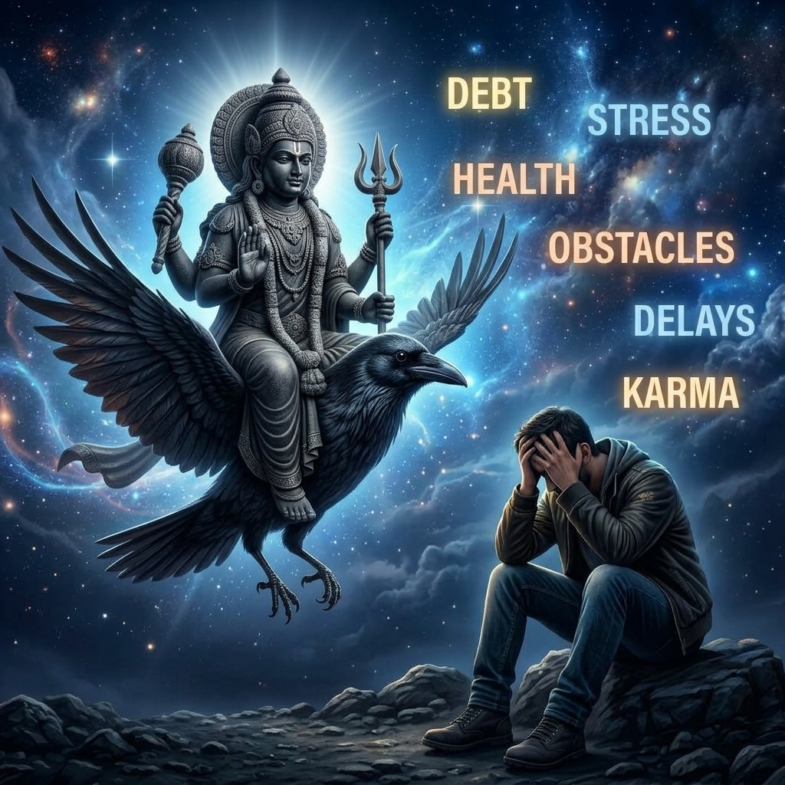
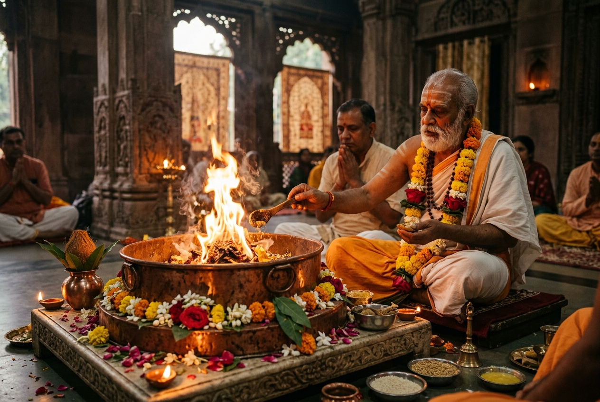
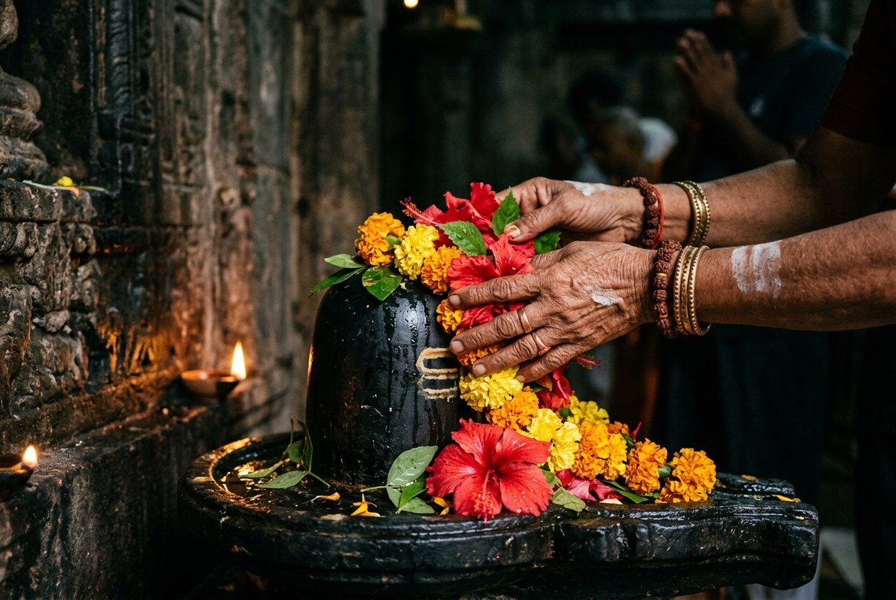

Struggles in career growth, sudden job loss, or workplace politics.
Mounting debts, unexpected heavy expenses, and blocked wealth.
Chronic illnesses, joint pain, extreme fatigue, or lingering health issues.
Misunderstandings, conflicts, and lack of harmony with loved ones.
Constant worry, depression, fear of the unknown, and loss of peace.
In Vedic astrology, periods like Sade Sati, Shani Dasha and other Saturn transits are a part of your life's journey.
In Vedic astrology, periods like Sade Sati, Shani Dasha and other Saturn transits are a part of your life's journey.
They are not meant to be feared, but understood. Through traditional remedies, you can seek Saturn's blessings and navigate this phase with greater strength, clarity, and stability.
Shani is associated with karma, discipline and long-term growth. When Saturn feels challenging, traditional practices such as Shani worship, Archana and mantra chanting are believed to help pacify its intensity.
A Saturn Yantra is used as sacred support to encourage balance, protection and stability.
Select the right authentic Vedic solution based on how you would like to participate in the rituals.


A simple and secure process to begin your Shani remedy.
Select the option that best suits your requirements.
Provide the required information for the ritual.
Rituals are performed as per ancient tradition.
Get full confirmation and updates as applicable.
"I started the daily Shani worship during my Sade Sati. The process was simple and well organized."
"The 7-day pooja gave me a sense of calm and clarity. I'm glad I could participate."
"I chose the monthly worship for continued support. The updates were helpful."
"I was facing immense financial blockages. Since starting the daily archana, I've seen unexpected doors open up in my business. Truly blessed."
"My health took a huge toll during Shani Dasha. The 7-day Pooja gave me an incredible sense of inner strength and my recovery has been remarkable."
"I was skeptical at first, but the ongoing monthly support and regular updates brought a profound sense of peace to my family."
Vedic astrology suggests that while karmic influences cannot be entirely erased, participating in traditional remedies helps pacify the intensity and provides inner strength to navigate the period.
Yes, it is possible for the 7.5-year Sade Sati transit to overlap with the 19-year Shani Dasha period, making the influence of Saturn particularly prominent during those overlapping years.
Traditional remedies include daily Archana, Mantra chanting, Homam, and establishing a Saturn Yantra. These practices are designed to show devotion and seek discipline.
No. Selecting a single remedy performed with sincere devotion is traditionally considered more effective than participating in multiple without focus.
It depends on your current situation. Daily sponsorship is great for continuous support, while a 7-day or 30-day Pooja is for more focused participation during critical phases.
Vedic rituals are a matter of faith and karma. They are meant to provide spiritual support and pacify negative influences, but specific life outcomes cannot be guaranteed.
No. While highly recommended during Sade Sati and Shani Dasha, anyone seeking discipline, career growth, or stability can perform Shani worship at any time.
You will receive an email confirmation upon successful booking, and further updates once the designated priests perform the rituals on your behalf.